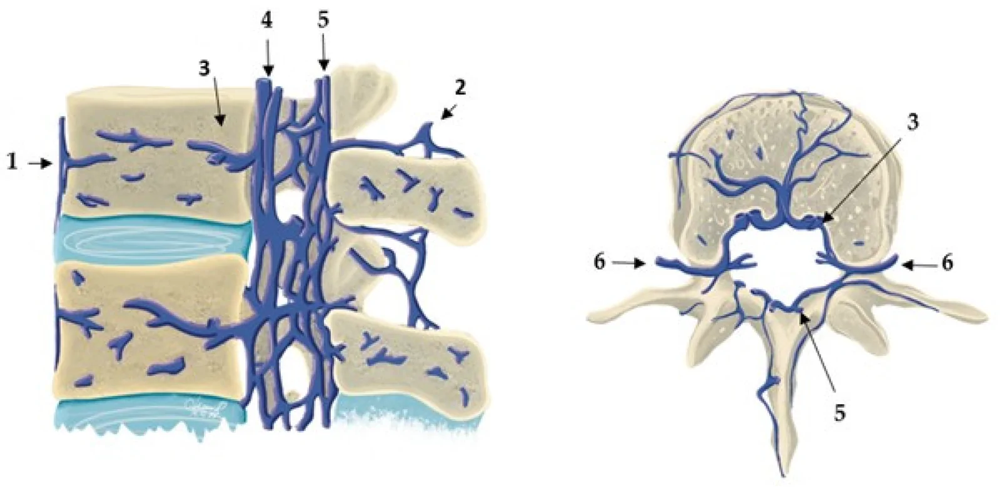
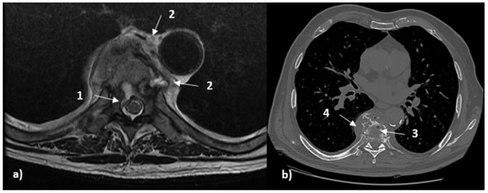
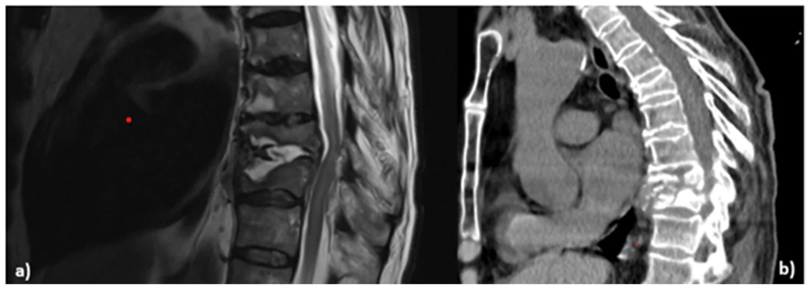
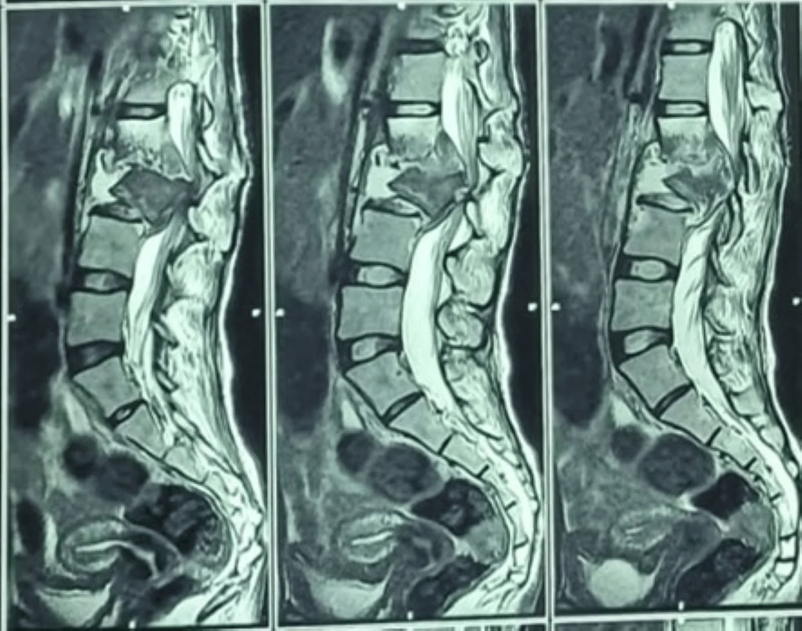
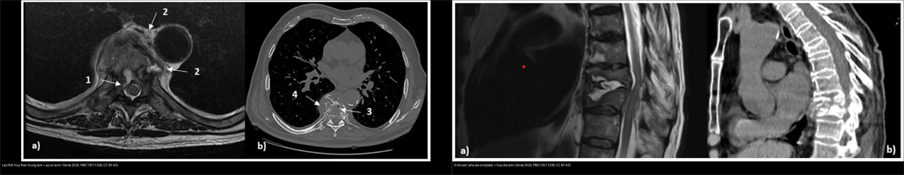
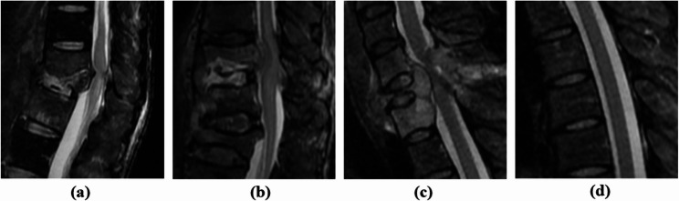

222 — Viêm đốt sống-đĩa đệm: Pott vs vi khuẩn vs di căn / Spondylitis vs Mets
Tags: pattern:viem-dot-song vung:cot-song protocol:MRI-cot-song
Mức chắc chắn (certainty): tổng hợp y văn (literature synthesis) — tổng hợp từ y văn mở (Diagnostics 2026 PMC13511338, Cureus 2026 PMC13523787, BMC Musculoskelet Disord 2026 PMC13220592), số liệu lấy nguyên từ bảng/Fig nguồn.
1. Tổng quan — đĩa là nạn nhân hay nhân chứng thì tùy thủ phạm
- TẠI SAO vi khuẩn sinh mủ ăn đĩa trước: Staphylococcus aureus theo động mạch đầu–cuối (end-artery) vào thân đốt rồi lan ra đĩa đệm vô mạch; protease của vi khuẩn phá hủy đĩa sớm → phù Modic I, hẹp đĩa nhanh, áp-xe cạnh sống "nóng" (ngấm mạnh, thành dày/không rõ).
- TẠI SAO lao (Pott) bảo tồn đĩa sớm: Mycobacterium tuberculosis khởi đầu cạnh đĩa (paradiscal) rồi lan dưới dây chằng dọc trước (subligamentous) nhiều thân; thiếu protease → đĩa tương đối còn → hoại tử bã đậu lan xa thành áp-xe lạnh thành mỏng, rõ, hay vôi hóa, gây gù (kyphosis).
- TẠI SAO di căn chừa đĩa: tế bào K theo đám rối tĩnh mạch Batson vào tủy xương/cuống (pedicle) — đĩa vô mạch thoát nạn → hủy cuống, chừa đĩa (mất "mắt cú" trên X-quang thẳng).
- Chốt sinh–tử: cấy máu/mủ + GenXpert trước kháng sinh; lao ATT 9–12 tháng, vi khuẩn sinh mủ kháng sinh 6–8 tuần. Không có dấu hiệu ảnh đơn lẻ nào "vàng" cho lao hay mủ (PMC13511338).

Sơ đồ sagittal (trái) + axial (phải) đám rối tĩnh mạch đốt sống không van (Batson): giải thích TẠI SAO di căn theo cuống/thân và TẠI SAO đĩa vô mạch ít bị xâm lấn. Nguồn: Vanta OM et al., Diagnostics 2026, PMC13511338, CC BY 4.0.2. Gamut — bảng "domain" định hướng TS vs PS (Pott vs vi khuẩn)
Theo bảng tổng hợp của PMC13511338 (mỗi dòng = một miền dấu hiệu):
| Miền (domain) | Nghiêng LAO (TS) | Nghiêng VI KHUẨN (PS) |
|---|---|---|
| Tầng & lan rộng | Ngực ưu thế; nhiều thân ≥ 2; tổn thương nhảy cách (skip) | Thắt lưng ưu thế; thường 1 tầng liền kề |
| Phức hợp đĩa–bản tận | Bảo tồn đĩa tương đối sớm; hủy thân không tương xứng với tổn thương đĩa | Đĩa sáng T2 sớm + hẹp đĩa nhanh + hủy bản tận rõ |
| Tín hiệu thân đốt | T1/T2-STIR không đồng nhất, ngấm không đồng nhất; áp-xe trong xương hay gặp | Ngấm tủy/mô mềm đồng nhất hơn |
| Kiểu hủy & trục | Hủy trung tâm thân nặng, sập > 50%, chồng thân, gù | Hủy < 50%, ít gù sớm |
| Tụ cạnh sống/màng cứng | Áp-xe lớn, thành mỏng, giới hạn rõ | Thành dày/không đều hơn; viêm mô (phlegmon) nhiều hơn |
| Lan theo dây chằng | Lan dưới dây chằng (dọc DC dọc trước) | Ít lan dưới dây chằng hơn; khu trú tại mặt đĩa–bản tận |
| Di căn (đối chứng) | — | Hủy cuống + CHỪA đĩa + khối ngoài màng cứng |
- Mô hình dự đoán (tham khảo, chưa dùng đại trà): mô hình một trung tâm AUC 0,95, Se 85,6%, Sp 87,8% (chưa ngoại kiểm); mô hình của Zhang (CT+MRI+xét nghiệm) AUC 0,981, Se 91,4%, Sp 95,7% với 4 biến: WBC < 7,265 × 10⁹/L, tổn thương nhảy cách/≥ 3 tầng, mảnh chết (sequestra) lớn, hủy xương dưới dây chằng → lao (PMC13511338).
3. Bảng so sánh phân biệt (ma trận đối chiếu)
| Thực thể (entity) | Hình ảnh điển hình | Chốt vào (rule-in) | Chốt loại (rule-out) | Gợi ý xác nhận |
|---|---|---|---|---|
| Vi khuẩn sinh mủ (PS) | Hủy phức hợp đĩa–bản tận, hẹp đĩa nhanh, áp-xe/phlegmon thành dày, tầng thắt lưng, 1 tầng | Sốt + CRP cao + hủy đĩa sớm + Modic I | Bảo tồn đĩa + vôi hóa + lan dưới dây chằng → lao | Cấy máu/mủ + KS 6–8 tuần |
| Lao Pott (TS) | Hủy trung tâm thân, nhiều thân/skip, lan dưới dây chằng, áp-xe lạnh thành mỏng, vôi hóa, gù | Ngực + nhiều thân + bảo tồn đĩa sớm + áp-xe lạnh | Hủy cuống + chừa đĩa hoàn toàn → di căn | GenXpert + ATT 9–12 tháng |
| Di căn đốt sống | Hủy cuống (mất mắt cú), chừa đĩa, khối ngoài màng cứng, thường 1–2 tầng không liền | Cuống + K đã biết + chừa đĩa | Hủy đĩa sớm → vi khuẩn | PET-CT + sinh thiết + xạ |

Trái (a): T2 axial — hủy/hủy trung tâm thân D8 + tụ cạnh sống; phải (b): CT axial — hủy thân + mảnh xương/vôi trong tổn thương (dấu hiệu nghiêng lao). Nguồn: Vanta OM et al., Diagnostics 2026, PMC13511338, CC BY 4.0.
Trái (a): T2 sagittal — hủy phức hợp đĩa–bản tận, hẹp đĩa rõ; phải (b): CT sagittal — hủy đĩa + bản tận (dấu hiệu nghiêng vi khuẩn). Nguồn: Vanta OM et al., Diagnostics 2026, PMC13511338, CC BY 4.0. Ảnh gốc là ca riêng, không phải cùng bệnh nhân với ca Pott.
Hủy thân L2–L3 + trượt ra trước + hẹp ống sống, liệt 2 chân. Nguồn: Pothare N et al., Cureus 2026, Fig. 2, CC BY 4.0.
Trái: lao — hủy trung tâm thân + áp-xe/lan rộng. Phải: vi khuẩn — hủy phức hợp đĩa–bản tận, hẹp đĩa. Nguồn: cả hai ảnh từ Vanta OM et al., Diagnostics 2026, PMC13511338, CC BY 4.0. Ảnh ghép letterbox.4. Protocol
- MRI cột sống + gadolinium là trung tâm: T1W, T2W, STIR, T1W sau tiêm xóa mỡ (sagittal + axial). Đọc 7 điểm: tầng/số thân, phức hợp đĩa–bản tận, tín hiệu thân, kiểu hủy–trục, tụ cạnh sống/màng cứng, lan dây chằng, yếu tố sau (PMC13511338).
- Nghi lao → chụp TOÀN BỘ cột sống (tìm skip lesions), X-quang ngực, và tầm soát lao ngoài phổi.
- CT bổ sung khi cần chi tiết hủy xương/vôi hóa/mảnh chết; ¹⁸F-FDG PET/CT bổ trợ khi MRI chống chỉ định/mơ hồ, nhiễm trùng có dụng cụ, hoặc định hướng sinh thiết (không phải tuyến đầu).
- Sinh thiết/kim dẫn đường CT + cấy máu/mủ + GenXpert TRƯỚC kháng sinh — chốt sinh-tử.
flowchart TD
A[Huy than dot song + dau/sot] --> B{Dia bi pha som?}
B -->|Co + sot cao| C[Vi khuan sinh mu: cay + KS 6-8 tuan + dan luu]
B -->|Khong som + nhieu than/skip + voi/gua| D[Lao Pott: GenXpert + ATT 9-12 thang]
B -->|Chua dia + huy cuong| E[Di can: PET + sinh thiet + xa/mo]
D --> F{Liet/mat vung?}
F -->|Co| G[Giai ep + co dinh som]
5. Cạm bẫy
- Kháng sinh mù trước cấy = mất chẩn đoán vi khuẩn — cấy máu/mủ + GenXpert trước thuốc.
- Pott liệt tiến triển chờ ATT ngấm = liệt vĩnh viễn — mổ giải ép + cố định khi liệt/mất vững (như ca Pott L3 dưới).
- CT bình thường/bất thường tối thiểu KHÔNG loại trừ lao hay mủ, nhất là giai đoạn sớm (PMC13511338) — MRI mới nhạy.
- Bơm xi măng vào di căn/Pott không sinh thiết — phải loại trừ cuống + áp-xe lạnh trước.
- Thoái hóa Modic I ("claw sign" ôm đĩa) tưởng viêm thân sống — đĩa đen T2 + không phá bản tận + không sốt/CRP = thoái hóa (viêm là phá bản tận + đĩa sáng dịch + sốt).
- Không có dấu hiệu ảnh đơn lẻ nào là "vàng" — mô hình dự đoán chỉ là bổ trợ xác suất, không thay cấy/sinh thiết (PMC13511338).
6. Tự lượng giá — Blind Quiz
Ca 1 — Nữ 22 tuổi đau lưng 6 tháng + liệt 2 chân đột ngột. Đọc MRI.
- Hỏi: hủy ở đâu? Trượt hướng nào? ATT đơn thuần đủ không?
Bấm để hiện đáp án (findings + chẩn đoán)
- Findings: hủy thân L2–L3 + trượt ra trước + hẹp ống sống + tủy đuôi ngựa chèn.
- Chẩn đoán: lao Pott mất vững liệt 2 chân — ATT 9–12 tháng + corpectomy L3 + ghép xào chậu (mất vững + liệt không chờ thuốc).
- Nguồn: Pothare N et al., Fig. 2, Cureus 2026, CC BY 4.0.
Ca 2 — Bốn mặt sagittal T2 cạnh nhau: (a), (b), (c), (d). Xác định bệnh nào là vi khuẩn, lao, di căn, bình thường?

- Hỏi: mặt nào hủy đĩa–bản tận (vi khuẩn)? mặt nào chừa đĩa + khối (di căn)? mặt nào nhiều tầng/hủy thân (lao)?
Bấm để hiện đáp án (findings + chẩn đoán)
- Theo chú thích nguồn: (a) pyogenic (vi khuẩn), (b) spinal tuberculosis (lao), (c) spinal metastasis (di căn), (d) normal (bình thường).
- Chốt: vi khuẩn = hủy phức hợp đĩa–bản tận; lao = hủy thân nhiều tầng; di căn = chừa đĩa + khối. Không có dấu hiệu đơn lẻ nào đủ — ghép bối cảnh (dịch tễ, sốt, CRP, GenXpert).
- Nguồn: Sangsin A et al., BMC Musculoskelet Disord 2026, Fig. 2, PMC13220592, CC BY-NC-ND 4.0 (giữ nguyên bản).
Ca 3 — Ghép: hai kiểu hủy đốt sống — bên nào lao, bên nào vi khuẩn?
Bấm để hiện đáp án (findings + chẩn đoán)
- Trái — lao Pott: hủy trung tâm thân, lan rộng/nhiều tầng, tụ cạnh sống. Phải — vi khuẩn: hủy phức hợp đĩa–bản tận, hẹp đĩa rõ, 1 tầng.
- Chốt: đĩa là mấu chốt — phá sớm = vi khuẩn; bảo tồn tương đối = lao; chừa hoàn toàn = di căn. Nguồn: Vanta OM et al., Diagnostics 2026, PMC13511338, CC BY 4.0.
Ca 4 — Sốt 39 °C + phá đĩa L4–L5 + áp-xe nóng, cấy Staph: Pott hay vi khuẩn? Thuốc bao lâu? (Bảng mục 3.)
Bấm để hiện đáp án (findings + chẩn đoán)
- Vi khuẩn sinh mủ: kháng sinh 6–8 tuần + dẫn lưu (Pott = áp-xe lạnh + vôi + bảo tồn đĩa sớm + ATT 9–12 tháng).
Ca 5 — K phổi + hủy cuống D8 + chừa đĩa + không sốt: viêm hay di căn? (Bảng mục 3.)
Bấm để hiện đáp án (findings + chẩn đoán)
- Di căn (mất "mắt cú"): PET + xạ/mổ — không phải Pott/vi khuẩn.
Bài liên quan chéo
- 200 – Tổng quan Thần kinh
- 220 – Ống sống 3 khoang (áp-xe ngoài màng cứng)
- 221 – Chấn thương cột sống (xẹp lành-ác)
- 223 – Chấn thương tủy sống: ASIA & SCIWORA
Ảnh
- Nguồn + giấy phép từng ảnh trong
images/CREDITS.md. Ảnh CC BY-NC-ND (PMC13220592) giữ nguyên bản, không crop/ghép.
Không dùng để chẩn đoán độc lập khi chưa có người hướng dẫn.